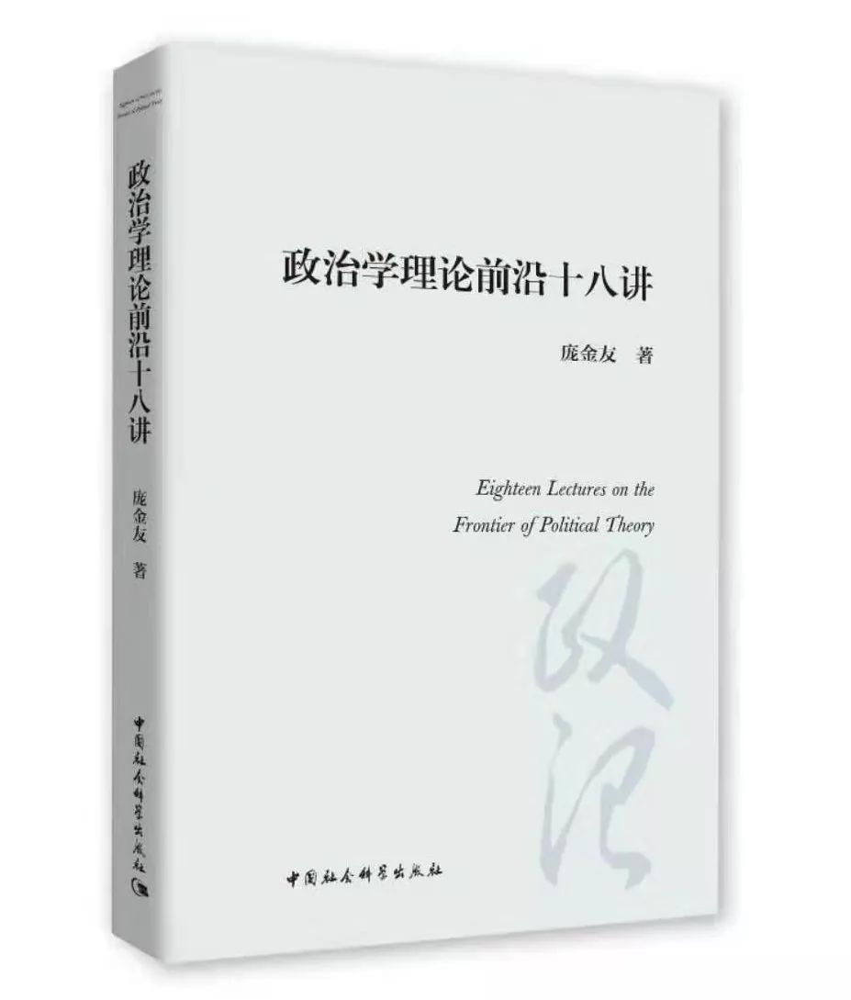

收录于合集

政治学理论前沿十八讲
Eighteen Lectures on the Frontier of Political Theory
中国社会科学出版社2019年7月出版
作者
简介
庞金友
1975年2月出生，辽宁铁岭人。中国政法大学政治与公共管理学院教授，副院长，博士生导师，美国埃默里大学卡特中心访问学者，意大利罗马二大高级访问学者，中国政治学会理事，北京政治学行政学会常务理事，中国政治思想研究会常务理事，教育部青少年法制教育基地兼职研究员，中国政法大学学术委员会委员，《政治思想史》杂志编委。2005年7月进入中国政法大学工作。主要从事西方政治思想史与政治学理论的教学与研究工作。先后出版《现代西方国家与社会关系理论》、《公民与国家：现代西方公民传统与国家观念》等专著，翻译《自由多元主义》、《自由多元主义的实践》、《悲剧与拒绝》等译著，主编《变化社会中的政治观念》、《观念的冲突与政治秩序的构建》等著作，在《政治学研究》、《天津社会科学》、《文史哲》等杂志上发表论文70余篇。
本书
导论
国家理论是当代政治学理论的基本议题。 19世纪末20世纪初，在国内政治和国际环境的双重夹击下，长期移居主流地位的自由放任原则江河日下，消极国家观和有限政府理论遭遇空前危机。如果政府不是越小越好，那又该如何？于是乎，围绕国家规模和权限的大或小、国家职能与效度的强或弱而展开的贯穿整个20世纪的理论之争由此拉开序幕。
在这场百年鏖战中，新自由主义（New Liberalism）与保守自由主义（Neo- liberalism）的纠葛缠斗是理解当代国家理论的重要线索。与传统自由主义不同，新自由主义反对消极国家观，坚持积极国家观，倡导以福利国家和政府干预为特征的“大政府”理论。新自由主义认为，大政府不仅可以增进社会的团结与和谐，促进个人与公共利益的平衡，实现社会权利与国家权力的统一，还与权利优于善的价值论和多元民主观协调一致。这一理论充分肯定了国家的地位，突出强调了政府的作用，虽然也主张将政府干预控制在一定限度内，但随即受到保守自由主义的猛烈批评。20世纪70年代，随着推行了近半个世纪的国家干预和福利国家遭到普遍质疑，保守自由主义的弱政府理论应运而生。这一理论承继传统自由主义的消极国家观，认为在自发秩序的引导下，市场经济可以自足自治；国家行为存在悖论，政府也会失灵；政府干预作用有限，弱政府才是最佳选择。借助认识论、自由观和民主观，自由主义阵营内部围绕消极国家观是否可能展开了激烈的争论。社群主义、新左派和“第三条道路”等思潮也前后加入战团，在批判自由主义国家观的同时提出自己的观点和主张。
在自由主义的当代批评者中，保守自由主义阵营中的诺齐克和共和主义阵营中的佩迪特表现最为明显，因为他们分别将罗尔斯和伯林作为批判对象。针对罗尔斯式的积极国家观，诺齐克提出，最弱国家才是最好的国家形式。通过对无政府主义和多功能国家的批判，诺齐克认为，最弱国家不仅有产生的必要性，而且是功能发挥最多的国家，任何主张扩大国家功能的做法势必侵犯个人权利。最弱国家是可欲的，它为个人自由实现其权利提供了理想的乌托邦架构。考虑到现实社会经济等因素，这种最弱国家并不适合处于转型期的发展中国家。当代共和主义者也坚持积极国家观，因此，佩迪特将矛头直指伯林的消极国家观。他主张以无支配自由观取代伯林式的无干涉自由观。这种自由观将“无支配的干涉”纳入自由的范围的同时，将“无干涉的支配”排除在自由之外，认为国家非专断、非任意的干涉无害于自由，国家应积极作为以消除各种支配性因素的存在，从而改变国家的“守夜人”形象，确立积极国家的合理性。
进入20世纪80年代，当代国家理论的重心发生转向：从“应然”转向“实然”，从规范性研究转向操作性研究，从发达国家转向发展中国家，从强调国家与社会的对立冲突转向强调国家与社会的合作与双赢。在这样的背景下，出于对“社会中心主义”的全面反思，“回归国家”学派迅速崛起并逐渐形成以斯考切波等为代表的“国家中心主义”和以米格代尔等为代表的“国家—社会互动主义”两大路径，开始围绕何为国家能力、国家能力如何生成、国家能力受何影响等重要议题展开争论。“国家中心主义”强调国家自主性的关键性作用，认为国家与社会越是“隔离”则国家能力越强；“国家—社会互动主义”则认为，国家能力生成与变化的决定性因素在于国家对社会的渗透能力，在于国家与社会的嵌入结构。从这个意义上，两派达成共识：所谓“强国家”就是实现了对社会的有效渗透并成功抵御了来自社会渗透的国家，反之则是“弱国家”。
民主理论是当代政治学理论的焦点议题。 深度研讨民主的基础理论并跟踪考察民主的最新动向，是当代民主理论的两大重心。显然，从国内外学界的成果产出和探讨热度来看，人们对当代民主实践的反思与焦虑远胜于对民主传统与历史的追忆与爬梳。
多数原则一直是民主制度最基本、最核心的原则，也是现代民主遭遇的诸多困境中最为棘手的一个。当政治方案遇到冲突和分歧需要借助多数原则选择时，这一原则往往无法回避两大风险：一是“多数暴政”；二是“热情的少数遇到冷漠的多数”。这时，少数人权利与强度因素就成为一个重要变量。借助权力制衡进行制度设防，倚重公民力量提供社会保障，培育民主观念筑造文化支撑，是比较可行的应对方案。
毫无疑问，关注当代民主的最新动向和发展，仍是民主理论的重中之重。这里，当代新共和主义者的努力值得一提。针对自由主义者提出的“自由并不预设任何政体形式”的主张，共和主义的领军人物佩迪特给予迎头痛击。他明确提出，无支配自由与现代民主之间存在逻辑上的内在关联，论辩式民主就是其中可供选择的制度形式。在充分解构伯林式的消极—积极自由观的基础上，佩迪特提出了区别于自由主义传统的“第三种自由”。为确保这种无支配自由的最终实现，佩迪特主张以论辩式民主弥补自由民主的缺陷，从而为新共和主义提供更佳的制度保障。论辩式民主并非在法治和分权之间简单取舍，而是强调协商、包容和回应。这种新型民主虽然存在诸多不足，但也为更好地解决自由与民主的张力问题进而重释当代民主的新内涵提供了新的理论范式。另外，近些年，人们对待公民社会的态度也在发生重大转变。20世纪90年代始，公民社会一度被寄予重望。尤其对当代公民社会与民主化的关系，西方学术界长期以来一直持比较乐观的态度，甚至有学者断言公民社会就是民主化的充分条件。但人们忽略了公民社会概念的差异、公民社会对国家及民主的依赖、虚假的政治变量的存在，以及“公民社会决定论”的误导等诸多重要因素。反思这种乐观的理论态势，重新审视当代的公民社会与民主化，才能全面而谨慎地解读两者的关系。
值得一提的是，极化国家现象是当代欧美民主政治发展的最新趋势，也是理解当前欧美政治危机的症结所在。极化国家现象具有简单而线性的演进逻辑和复合且显著的现实特征：贫富差距不断加剧，政党政治乱局横生，精英与民众的阶层裂痕加大，极右与极左思潮同步崛起，社会断裂危机加重；经济极化为必要条件，政治极化为突出表现，社会和文化极化则是其深度扩张。在经济获益失衡、多元文化主义困境、公民价值观念扭转、政治传播转型以及政治版图与选民阵营重组等现实诱因的强势推动下，极化国家现象不断升级、愈演愈烈。极化国家内含强大的破坏力、解构力和重塑力，对欧美国内政治形势、国际关系格局和未来政治走向影响深远，其中尤以否决政体、极端政治、信任危机、“后真相政治”以及全球秩序重构最值得关注。极化国家现象在激化当代欧美民主政治危机的同时，也为未来政治发展提供了新的可能，为发展中国家带来了挑战与机遇，值得我们高度关注。
全球化理论是当代政治学理论的热点问题。 如何构建全球化时代的政治秩序，如何理解全球化带给民族国家和公民社会的挑战和机遇，如何看待全球化进程中国家与社会关系的模式转变，如何认识全球化进程中新兴大国的崛起和超级大国的歧路，是近些年学术探讨的中心议题。
对于如何在全球多元化时代构建并维系政治秩序尤其是如何处理“多元”与“一元”关系这一问题，西方学界形成了三大解决方案：施米特提出“主权决断论”，主张以政治领域统领其他领域，以政治决断确保民主制度的同质性，从而抑制多元化对政治统一体的侵蚀；罗尔斯提出“重叠共识论”，主张在理性多元论的基础上通过制度设计实现重叠共识，以正义理念统辖政治秩序，从而促成“多元”与“一元”的调和；墨菲则提出“多元竞争论”，主张通过政治共同体内部的紧张和冲突来实现民主价值，借助多元抗争实现均衡、妥协基础上的政治共识。这三种方案代表着当代西方最具典型意义的政治秩序建构路径，几乎穷尽了自由主义所能提供的可能路径，更凸显出全球化时代多元化社会政治秩序建构的复杂与艰难。
对于全球化对传统民族国家框架下的主权国家和公民社会的影响，学界基本达成共识：全球化是一把双刃剑。传统民族国家框架下的国家与公民社会日益受到全球化的挑战。一方面是民族国家的某些职能与角色正备受冲击，另一方面则是跨国公司和非政府组织等社会行为体的地位与作用日显其重。基于对民族国家内在的适应性和不可替代性、公民社会脆弱的独立性及对国家的依赖性的考虑，西方学者大多肯定全球化进程中国家的地位与作用，承认全球化打破国家与社会的传统边界和力量均衡的同时，也使两者合作与冲突的机会相应增加。在他们看来，欲求两者间和谐与健康的关系模式，必须在国家和公民社会这两个支点上同时着力，进行双向的、多维的良性建构。
对于全球化进程中的国家与社会关系，保守自由主义继承并发展了传统自由主义的消极国家观和“小政府”理论，倡导“弱政府、强社会”的关系模式，并提出民族国家收缩、公民社会扩张和全球治理兴起三大假设。以哈贝马斯为首的新左派基于“合法性危机”理论，反对市场逻辑和新殖民主张，寄希望于“超民族国家共同体”，使现代国家摆脱全球化困境。“第三条道路”则走在两者之间，既兼顾民主和福利，又重视市场和公民社会，力求在国家与社会、安全感与灵活性、理性调节与自发秩序之间寻求新的平衡。
对于当代以美国为代表的超级大国，谢尔登·沃林从福利化、公司化和极权化三个层面展开深入的批判。在他看来，强势的福利国家会引发公民危机，造成公共领域急剧萎缩，致使政治被经济绑架；越界的公司化国家模糊了政治与经济的传统界限，结果是经济与政治同化，公民被弱化甚至虚化；“颠倒的极权国家”则导致被删除的公民、被豁免的权限、被颠倒的极权主义、被阉割的公民教育、被无限驱动的扩张本能的出现。警惕全球化时代一些超级大国的发展歧路，是沃林国家理论的最大启示。
政治发展理论是当代政治学理论的重点议题。 其中，国家为什么会失败、国家权力为什么不能超限，这是传统话题的深度再释，而多元文化主义的衰落、新保守主义的崛起，则是当前全球政治的最新变化。
探究现代国家失败的原因，寻找防范国家失败的策略，是当代西方国家失败理论的核心议题。围绕这一核心议题，学者们提出了诸多理论路径和分析框架。从权力路径入手探索的学者们认为，国家权力过度干预直接导致“政府泡沫”的出现，在破坏市场的同时也将部分发达国家推向崩溃边缘。从能力路径展开研究的学者们指出，部分发展中国家最欠缺的是强大而高效的政府能力，政府质量远比政府规模重要得多。从权威路径反思的学者们认为，全球化进程的加速、市场力量的崛起、技术发展的冲击，正在使国家权威不可避免地衰落。一些学者从政治信任的角度，提出由经济、社会与文化等诸因素合力引发的政府信任危机是多数国家失败现象的根本原因。一些学者则借助制度经济学的方法，提出汲取性制度是现代国家失败的根源，这一制度无法带来长期、持续和稳定的经济增长。当代西方学界对国家失败问题的最新思考，可以为发展中国家的国家建设和政治发展提供某种借鉴与启示。
国家权力自主性、国家权威合法性和国家能力有效性是西方国家限度理论的基本框架。国家权力发展不足，自主性就会缺失，从而滋生腐败，甚至威胁稳定；但若发展过度，自主性则会扩张，社会陷入权力困境。国家权威离不开社会认同，否则合法性就会出现危机，但若权威增长不加节制，国家就难以维系公民认同与服从。国家能力的增长，有利于国家目标的实现，但若越过合理界限，则容易导致国家行动无节制，进而失去有效性。国家权力、国家权威和国家能力必须约束在合理的界限内，超限的国家是随时可能引爆国家失效的炸弹。
族群身份与国家认同的关系，是当代多族群国家无法回避的一大难题。多元文化主义在传统族群身份的基础上提出“差异公民”概念，重申族群身份并不必然威胁公民身份，族群权只是一种特殊的公民权。族群身份内含认同与差异两方面的张力:族群认同关注族群的文化归属，尊重并承认族群认同是形成国家认同的前提和基础:族群差异侧重族群的权利取向，过分强调族群差异与过分忽略族群差异同样不利于国家认同。针对自由主义的普遍公民观、一元文化论和消极国家观，多元文化主义主张差异政治、多元文化和积极国家，倡导“和而不同，多元并存”的族群与国家关系。
新保守主义的强势崛起是当前欧美政治的最新变化，对国内政治乃至全球格局影响深远。二战后，在巴克利的努力下，古典自由主义、传统主义和激进主义者结成联盟，当代美国保守主义阵营初步建立。20世纪六七十年代后，新保守主义和宗教保守主义相继加入，加上里根总统的强大影响，保守主义一度空前强盛。进入1990年代后，在内忧外患双重压力下，保守主义遭遇了前所未有的危机，内部分歧加剧。在各派围绕保守主义原则和灵魂展开论争之际，特朗普意外当选，增加了这场思想内战的变数。特朗普主义能走多远，美国未来政治何去何从，理解当代美国保守主义的变迁、谱系与当下境遇至关重要。
国家治理理论是当代政治学理论的崭新议题。 它打通了传统意义上政治学和公共管理的学科藩篱，涵盖了当前涉及国家治理体系和国家治理能力的诸多重要议题。其中，人工智能引发的秩序困境、网络政治参与的双重影响、“后真相”政治的潜在危机以及民粹主义的可能风险等问题尤其值得关注。
人工智能是20世纪以来最为深刻、最有影响的技术革命和社会进步。它在深度挑战传统生产方式和经济关系的同时，也在广泛改变着现代人的日常行为和社会生活。人类长期既定的认知体系、价值观念和生活方式，习以为常的法律规则、道德信条甚至决策机制都面临着前所未有的危机和挑战。全新的AI时代，内在地需要全新的治理理念和治理形式。这就意味着，治理体系和治理能力必须实现跨级飞跃:从传统治理到互联网治理，再到AI精准治理。AI精准治理必须坚持创新、适度、平衡和多元四大原则，建构由政府、市场和社会组织等多元主体携手合作、共同参与的多层次、多样化的新型治理模式，既能合理应对可能出现的诸多风险，又能积极支持人工智能的有序发展。
随着信息化的应用、网络技术的普及，加之权利意识的觉醒、民主化趋势的加强、公民借助网络表达政治主张并诉求政治利益，成为政治生活的常态。这一参政渠道既具积极意义，也有消极影响。网民身份的虚名化和模糊化、网民政治表达的非理性和极端化、网民政治情感的情绪化和民粹化，使得网络政治参与的限度引起越来越多的人们的关注。拓宽参政渠道、推进制度化建设、树立信息权威、规范网络秩序、培育公民文化、提高网民素质，是破解这一时代课题的必由路径。
贫富差距造成的社会分化、媒体垄断催生的恶性竞争、互联网技术革新带来的传播转型、社交平台导致的认知偏见、公民政治信任危机等因素，是“后真相”政治形成与发展的前提和条件。后真相政治强调价值先于事实、真相让位于情感的秩序逻辑，在催生传统政治传播格局解体和新兴社交媒体生态成熟的同时，也加速了精英群体的集体溃退和“后政治心理”的初具雏形，并在一定程度上引发了理性坍塌、信任异化、道德相对主义泛滥和“第三种现实”滋生等政治危机。面对新时代社会主要矛盾转化与全面深化改革的大背景，按照新时代中国特色社会主义政治发展逻辑，可能需要建设共享、发展的利益格局，打造开放、有序的媒体环境，营造包容、规范的公共领域，保持谦逊、开放的政治心态，建构权威、共识的舆论话语，来应对网络时代“后真相”政治的挑战，破解其消极影响。
当代西方各国民粹主义思潮势头强劲，在现实政治中，民粹主义宣扬平民主义，仇官仇事，反精英、反体制，热衷激进立场与非理性政治。消解当代民粹主义的负向影响，必须准确认识并正确对待，既要将民粹情绪与民意表达区别对待，还要约束和规制民粹主义的极端立场，更要消解民粹主义滋生的土壤。
本书无意于构建当代政治学理论前沿研究的完整框架，更无力描画国内政治学理论前沿问题的整体图景，仅以笔者多年阅读和写作所涉猎的领域和议题为主线，以图呈现一个难掩个人色彩的独特视角和虽用心竭力却未必深刻的研究结论。

图书
目录
“
导论
第一编 国家理论
第一讲 新自由主义的国家理论
第二讲 保守自由主义的国家理论
第三讲 诺齐克的国家理论
第四讲 佩迪特的国家理论
第二编 民主理论
第五讲 佩迪特与论辩式民主
第六讲 公民社会与民主化关系的新解读
第七讲 国家极化与当代欧美民主危机
第三编 全球化理论
第八讲 全球化时代政治秩序的构建路径
第九讲 全球化视野中的国家与公民社会
第十讲 全球化进程中国家与社会关系的模式之争
第四编 政治发展理论
第十一讲 国家为什么会失败：当代西方国家失败理论的路径与逻辑
第十二讲 国家为何不能超限：当代西方国家限度理论的逻辑进路
第十三讲 “回归国家”学派的国家能力理论
第十四讲 族群身份与国家认同：多元文化主义的政治策略
第五编 国家治理理论
第十五讲 人工智能时代的秩序困境与治理原则
第十六讲 网络政治参与的限度与国家治理现代化
第十七讲 “后真相”政治的生成与治理
第十八讲 当代民粹主义的影响与消解
参考文献
后记
划
重点
“
8月23日23:59之前留言您对庞金友老师、中国社会科学出版社、政文观止Poliview或者政治学的喜爱（详细为宜），我们将本着 公平公正 的原则抽出 五位幸运 读者寄送赠书 （限大陆包邮地区） 。 我们特别希望被抽中的幸运读者能在读完这本书后写下书评发给我们，便于我们日后汇总发布。
没有抽中的读者朋友也请勿担心，本书在 京东 、 当当 以及 中国社会科学出版社 微店 均有售。
今年下半年 政文观止Poliview还将 继续举办赠书活动 ，欢迎继续关注、支持我们。